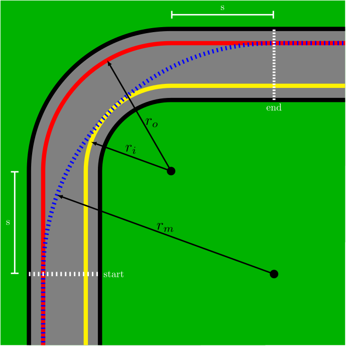

In this problem we wish to find an optimal racing line for a race car driver navigating a corner. We will simplify the problem by considering the three racing lines shown in the figure below. The outside line is shown in red and has a corner radius of \(r_o=20~\text{m}\). The inside line is shown in yellow and has a corner radius of \(r_i=15~\text{m}\). The middle line is shown in dashed blue and has a corner radius of \(r_m=32~\text{m}\).
The timer starts when the car passes the dashed white line labeled "start" and the timer stops when the car passes the dashed white line labeled "end". The straight-line distance, labeled \(s\), that the car must travel on the inside and outside lines before entering and leaving the curve is \(s=12~\text{m}\). The car on the middle line is always in the curve.
The car can accelerate at \(0.75g\) and brake with \(-g\). If the coefficient of friction between tires and tarmac is \(\mu_s=1.5\) find the best race time for each of the three lines. The car can approach the start line at any speed of your choosing. Make a plot of velocity vs time for the three lines. Neglect any aerodynamic forces.
Here is how I recommend you approach the problem. For all three lines, when the car is in the turn its fastest speed is determined by the tire's grip. If the normal component of the car's acceleration exceeds the friction from the road the car will loose control. Find this speed for all three lines and determine the time spent in the turn when maintaining this speed.
Since the middle line is always in the turn, the time you found is the total time. For the inside and outside lines we have to add the time spent in the straight segments. To minimize the time the car should cross the start line with the maximum speed allowable so that it can brake in time for the turn. When we exit the curve we accelerate as much as possible. These times need to be added to the time spent in the turn.